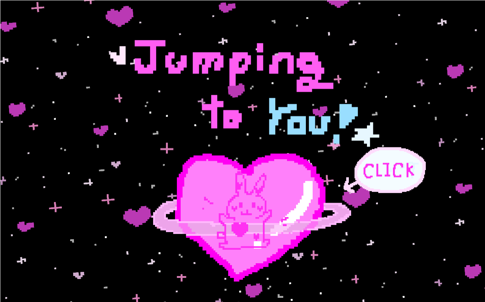
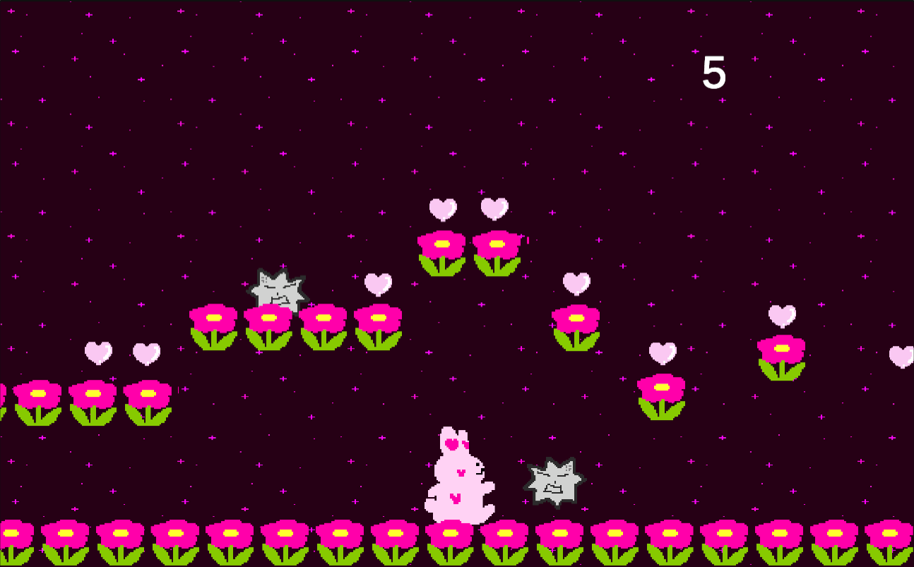
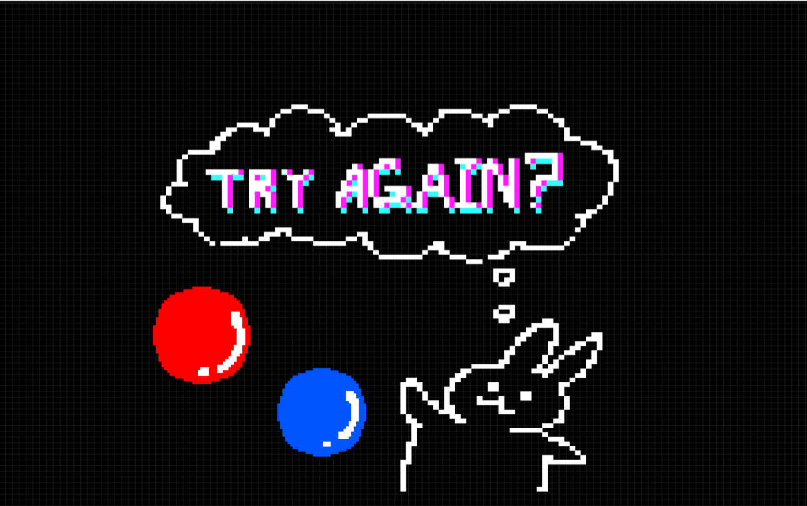

★게임 jumping to you



‘Jumping to you’는 하트토끼가 보고 싶은 대상에게로까지 우주세계의 여정을 담은 플랫폼 2d 게임입니다.
맵설명
4개의 챕터에 각 4개의 맵으로 구성 ( 총 16개 맵)
중심컬러가 있음
-핑크(플레이어의 세계)
-보라(중간 연결된 세계)
-블루(만나고 싶은 대상의 세계)
-블랙(만나고 싶은 대상과 만나는 세계)
*챕터 속 4개의 맵들은 '봄/ 여름/ 가을/ 겨울' 계절을 의미함
게임링크: https://yamdungi0.itch.io/jumping-to-you